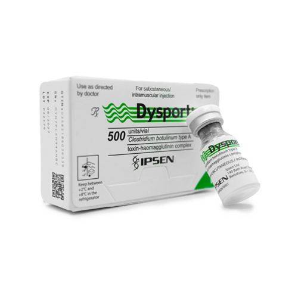

Toxina botulínica
Dysport (abobotulinumtoxinA) en viales de 300 U y 500 U. Las unidades de Dysport no son intercambiables con las de otras toxinas, por lo que la presentación debe elegirse según el protocolo de cada práctica.
MG Dermalab
La línea de medicina estética de MG Dermalab reúne toxina botulínica, bioestimuladores de colágeno y rellenos de ácido hialurónico para médicos y clínicas de todo México, con cotización privada, revisión de producto y envío nacional.
Dysport (abobotulinumtoxinA) en viales de 300 U y 500 U. Las unidades de Dysport no son intercambiables con las de otras toxinas, por lo que la presentación debe elegirse según el protocolo de cada práctica.
Portafolio

300 U y 500 U
Ver ficha
Presentación confirmada al cotizar
Ver ficha
Familia de ácido hialurónico
Ver fichaLabios
Ver fichaVolumen facial
Ver fichaArrugas moderadas
Ver fichaSurcos profundos
Ver fichaContorno y pómulos
Ver fichaOjeras
Ver fichaCalidad de piel
Ver fichaCalidad de piel
Ver fichaGuía Restylane: qué producto usar en cada zona → · Conoce cómo verificamos cada pieza
Preguntas frecuentes
A médicos estéticos, dermatólogos y clínicas de medicina estética.
Sí. Indica productos y cantidades y preparamos una sola cotización.
Viales de 300 U y 500 U, sujetos a disponibilidad.
Revisamos lote, caducidad y empaque antes de cada envío. Conoce cómo verificamos cada pieza.
Sí. Confirmamos cobertura, costo y tiempo de entrega antes de enviar.
Atención directa
Cuéntanos qué necesitas y te respondemos por WhatsApp con disponibilidad y condiciones.